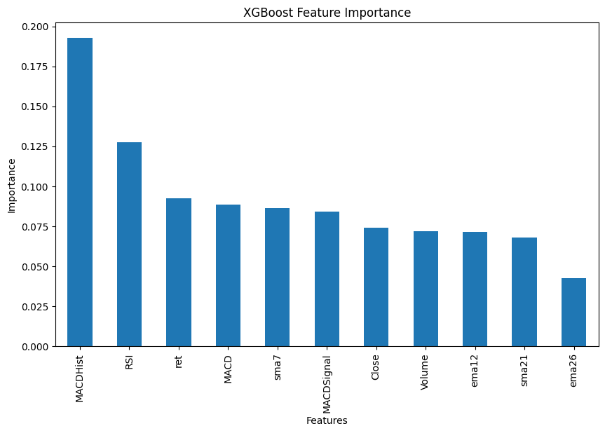

11. Machine Learning - Predicción de alza de activo#
!pip install TA-Lib backtrader quantstats --quiet
import time
import math
import numpy as np
import pandas as pd
import matplotlib.pyplot as plt
import xgboost as xgb
from sklearn.metrics import accuracy_score
import yfinance as yf
import talib
df = yf.download("AAPL", start = "2021-01-01", end = "2025-10-31", auto_adjust=True, multi_level_index=False)
df.head()
[*********************100%***********************] 1 of 1 completed
| Close | High | Low | Open | Volume | |
|---|---|---|---|---|---|
| Date | |||||
| 2021-01-04 | 125.974464 | 130.062961 | 123.394814 | 129.975354 | 143301900 |
| 2021-01-05 | 127.531990 | 128.242621 | 125.020481 | 125.468276 | 97664900 |
| 2021-01-06 | 123.239075 | 127.570942 | 123.024914 | 124.329344 | 155088000 |
| 2021-01-07 | 127.444405 | 128.135562 | 124.465642 | 124.952368 | 109578200 |
| 2021-01-08 | 128.544357 | 129.108961 | 126.772667 | 128.914259 | 105158200 |
df.shape
(1213, 5)
df['Close'].plot()
<Axes: xlabel='Date'>
Feature engineering#
# Features
df["sma7"] = talib.SMA(df["Close"], timeperiod = 7)
df["sma21"] = talib.SMA(df["Close"], timeperiod = 21)
df["RSI"] = talib.RSI(df["Close"])
df["MACD"], df["MACDSignal"], df["MACDHist"] = talib.MACD(df["Close"],
fastperiod = 12,
slowperiod = 26,
signalperiod = 9)
df["ema12"] = talib.EMA(df["Close"], timeperiod=12)
df["ema26"] = talib.EMA(df["Close"], timeperiod=26)
df["ret"] = df["Close"].pct_change()
df['Weekly_Change'] = df['Close'].pct_change(5)
df['target'] = (df['Weekly_Change'].shift(-1) > 0.01).astype(int)
features = ['Close','ret', 'Volume', 'sma7', 'sma21', 'RSI', 'MACD', 'MACDSignal', 'MACDHist', 'ema12', 'ema26']
df.dropna(inplace=True)
df['Weekly_Change'].plot()
<Axes: xlabel='Date'>
class_counts = df['target'].value_counts()
print("Class distribution of the 'target' variable:")
print(class_counts)
plt.figure(figsize=(6, 4))
class_counts.plot(kind='bar', color=['skyblue', 'lightcoral'])
plt.title('Distribution of Target Classes')
plt.xlabel('Class')
plt.ylabel('Number of Occurrences')
plt.xticks(ticks=[0, 1], labels=['0 (No >1% increase)', '1 (>1% increase)'], rotation=0)
plt.show()
Class distribution of the 'target' variable:
target
0 649
1 531
Name: count, dtype: int64
Separar en entrenamiento y prueba
split_index = int(len(df) * 0.8)
X_train = df[features].iloc[:split_index]
y_train = df['target'].iloc[:split_index]
X_test = df[features].iloc[split_index:]
y_test = df['target'].iloc[split_index:]
print(f"Shape of X_train: {X_train.shape}")
print(f"Shape of y_train: {y_train.shape}")
print(f"Shape of X_test: {X_test.shape}")
print(f"Shape of y_test: {y_test.shape}")
Shape of X_train: (944, 11)
Shape of y_train: (944,)
Shape of X_test: (236, 11)
Shape of y_test: (236,)
Entrenar modelo
from xgboost import XGBClassifier
model = XGBClassifier(random_state=42)
model.fit(X_train, y_train)
XGBClassifier(base_score=None, booster=None, callbacks=None,
colsample_bylevel=None, colsample_bynode=None,
colsample_bytree=None, device=None, early_stopping_rounds=None,
enable_categorical=False, eval_metric=None, feature_types=None,
feature_weights=None, gamma=None, grow_policy=None,
importance_type=None, interaction_constraints=None,
learning_rate=None, max_bin=None, max_cat_threshold=None,
max_cat_to_onehot=None, max_delta_step=None, max_depth=None,
max_leaves=None, min_child_weight=None, missing=nan,
monotone_constraints=None, multi_strategy=None, n_estimators=None,
n_jobs=None, num_parallel_tree=None, ...)In a Jupyter environment, please rerun this cell to show the HTML representation or trust the notebook. On GitHub, the HTML representation is unable to render, please try loading this page with nbviewer.org.
XGBClassifier(base_score=None, booster=None, callbacks=None,
colsample_bylevel=None, colsample_bynode=None,
colsample_bytree=None, device=None, early_stopping_rounds=None,
enable_categorical=False, eval_metric=None, feature_types=None,
feature_weights=None, gamma=None, grow_policy=None,
importance_type=None, interaction_constraints=None,
learning_rate=None, max_bin=None, max_cat_threshold=None,
max_cat_to_onehot=None, max_delta_step=None, max_depth=None,
max_leaves=None, min_child_weight=None, missing=nan,
monotone_constraints=None, multi_strategy=None, n_estimators=None,
n_jobs=None, num_parallel_tree=None, ...)Evaluar modelo
from sklearn.metrics import classification_report
y_pred = model.predict(X_test)
classification_rep = classification_report(y_test, y_pred)
print(classification_rep)
Accuracy: 0.7119
Precision: 0.7333
Recall: 0.6581
F1-Score: 0.6937
Feature importance
feature_importances = pd.Series(model.feature_importances_, index=X_train.columns)
feature_importances_sorted = feature_importances.sort_values(ascending=False)
plt.figure(figsize=(10, 6))
feature_importances_sorted.plot(kind='bar')
plt.title('XGBoost Feature Importance')
plt.xlabel('Features')
plt.ylabel('Importance')
plt.show()

Comparar estrategia vs buy-and-hold#
X_test['pred'] = y_pred
X_test['pred'].values
array([1, 1, 1, 1, 0, 1, 0, 1, 1, 1, 1, 1, 1, 0, 1, 0, 0, 1, 0, 0, 1, 1,
0, 0, 0, 1, 0, 0, 0, 0, 0, 0, 0, 0, 0, 0, 0, 0, 0, 0, 0, 0, 0, 1,
1, 1, 1, 0, 0, 1, 0, 1, 0, 1, 1, 1, 1, 1, 0, 1, 1, 0, 0, 0, 0, 0,
0, 0, 0, 0, 0, 0, 0, 0, 0, 0, 0, 1, 1, 1, 1, 0, 1, 1, 1, 1, 1, 1,
1, 1, 0, 0, 0, 0, 1, 0, 1, 1, 1, 1, 1, 1, 1, 1, 1, 1, 1, 1, 0, 0,
0, 0, 0, 0, 1, 1, 1, 1, 1, 1, 0, 0, 0, 0, 0, 0, 0, 0, 1, 0, 0, 1,
1, 0, 1, 0, 0, 0, 0, 0, 0, 0, 0, 1, 0, 1, 1, 1, 0, 1, 1, 1, 1, 1,
1, 0, 0, 0, 0, 0, 1, 0, 0, 0, 1, 0, 0, 0, 0, 0, 0, 0, 0, 0, 0, 1,
1, 1, 1, 1, 1, 0, 1, 0, 1, 0, 0, 0, 0, 0, 0, 0, 0, 0, 1, 1, 1, 1,
0, 0, 0, 0, 0, 0, 0, 0, 1, 1, 1, 1, 1, 1, 1, 0, 1, 0, 1, 0, 1, 1,
0, 0, 0, 0, 0, 0, 0, 1, 1, 0, 0, 0, 1, 1, 1, 1])
X_test["ret_est"]=X_test["pred"].shift(1) * X_test["ret"]
import quantstats as qs
rf = .04
qs.reports.metrics(X_test["ret_est"], benchmark = X_test['ret'], rf = rf, mode = "full")
Benchmark Strategy
------------------------- ----------- ----------
Start Period 2024-11-21 2024-11-21
End Period 2025-10-30 2025-10-30
Risk-Free Rate 4.0% 4.0%
Time in Market 100.0% 44.0%
Cumulative Return 19.19% 33.26%
CAGR﹪ 20.71% 36.06%
Sharpe 0.61 1.5
Prob. Sharpe Ratio 53.61% 82.81%
Smart Sharpe 0.58 1.43
Sortino 0.92 2.18
Smart Sortino 0.88 2.09
Sortino/√2 0.65 1.54
Smart Sortino/√2 0.62 1.48
Omega 1.54 1.54
Max Drawdown -33.36% -15.28%
Max DD Date 2025-04-08 2025-04-21
Max DD Period Start 2024-12-27 2025-04-03
Max DD Period End 2025-10-17 2025-05-12
Longest DD Days 295 49
Volatility (ann.) 33.47% 19.19%
R^2 0.33 0.33
Information Ratio 0.02 0.02
Calmar 0.62 2.36
Skew 1.04 -1.16
Kurtosis 13.12 19.81
Expected Daily % 0.07% 0.12%
Expected Monthly % 1.47% 2.42%
Expected Yearly % 9.17% 15.44%
Kelly Criterion 14.76% 23.66%
Risk of Ruin 0.0% 0.0%
Daily Value-at-Risk -3.37% -1.86%
Expected Shortfall (cVaR) -5.79% -5.79%
Max Consecutive Wins 8 7
Max Consecutive Losses 8 3
Gain/Pain Ratio 0.16 0.65
Gain/Pain (1M) 1.09 3.53
Payoff Ratio 1.09 1.09
Profit Factor 1.16 1.65
Common Sense Ratio 1.12 2.57
CPC Index 0.7 1.08
Tail Ratio 0.97 1.56
Outlier Win Ratio 3.44 11.09
Outlier Loss Ratio 2.99 3.67
MTD 6.59% -1.31%
3M 28.61% 7.44%
6M 28.81% 17.23%
YTD 8.76% 21.07%
1Y 19.19% 33.26%
3Y (ann.) 20.71% 36.06%
5Y (ann.) 20.71% 36.06%
10Y (ann.) 20.71% 36.06%
All-time (ann.) 20.71% 36.06%
Best Day 15.33% 6.31%
Worst Day -9.25% -9.25%
Best Month 11.96% 7.59%
Worst Month -8.15% -6.06%
Best Year 9.58% 21.07%
Worst Year 8.76% 10.07%
Avg. Drawdown -6.3% -2.73%
Avg. Drawdown Days 50 20
Recovery Factor 0.68 1.99
Ulcer Index 0.15 0.04
Serenity Index 0.14 0.45
Avg. Up Month 5.8% 4.37%
Avg. Down Month -4.34% -6.06%
Win Days % 55.56% 60.19%
Win Month % 66.67% 75.0%
Win Quarter % 60.0% 60.0%
Win Year % 100.0% 100.0%
Beta - 0.33
Alpha - 0.25
Correlation - 57.51%
Treynor Ratio - 88.72%